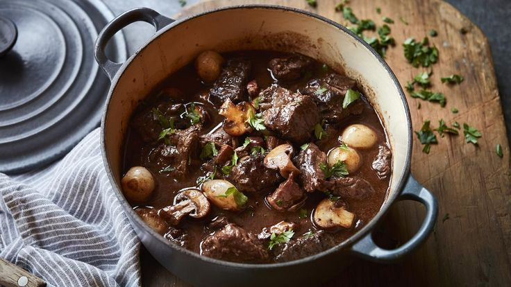

Бёф Бургиньон

Ингредиенты
- Говядина (лопатка) - 1 кг
- Красное вино - 750 мл
- Шампиньоны - 300 г
- Лук-шалот - 200 г
- Морковь - 2 шт
- Чеснок - 3 зубчика
- Томатная паста - 1 ст.л.
- Тимьян - 3 веточки
- Лавровый лист - 2 шт
- Бекон - 100 г
- Мука - 2 ст.л.
Способ приготовления
- Нарежьте говядину крупными кубиками, обжарьте до румяной корочки.
- Обжарьте бекон, добавьте нарезанные овощи и грибы.
- Посыпьте мукой, добавьте томатную пасту.
- Влейте вино, добавьте специи, доведите до кипения.
- Тушите в духовке при 160°C 2.5-3 часа.
- В конце проверьте мясо - оно должно быть очень мягким.
- Подавайте с картофельным пюре или свежим багетом.
Советы от шефа
Идеально использовать бургундское вино. Блюдо можно приготовить за день до подачи - на следующий день оно будет еще вкуснее.